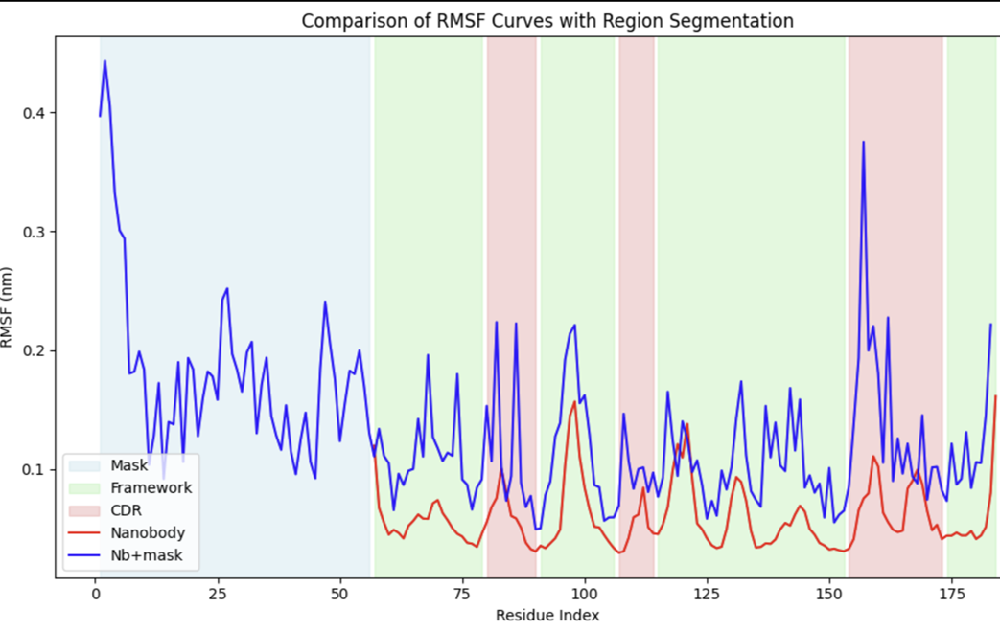

Context
I’ve been working at Hummingbird Bioscience to explore AI-driven solutions for protein design and drug discovery. My main focus is on designing novel nanobody “masks” or “locks” that can selectively activate therapeutic antibodies in tumor environments, thereby improving precision and minimizing off-target effects.
Antibody Locks & Problem Statement
Antibody Locks: A strategy to keep antibodies inactive until they reach tumor cells. Typically, a peptide “lock” is attached to the antibody’s antigen-binding site via a cleavable linker that tumor-associated proteases can cut.
Nanobody Challenge: Nanobodies have a single-chain format, making traditional coiled-coil masking strategies (developed for full-size antibodies) incompatible. We needed a new approach for attaching a cleavable lock at the nanobody’s N-terminus without disrupting its stability or binding functionality.
Design Pipeline
Below is an overview of our AI-driven workflow for creating de novo peptide masks targeting the nanobody’s CDR region:

-
Backbone Generation with RFDiffusion
Utilized the RFDiffusion model to generate new peptide backbones that could mask the nanobody’s CDR region. Focused on motif scaffolding and fold conditioning modes, embedding structural motifs and guiding the final conformation. Generated over 20,000 possible backbone designs. -
Inverse Folding via ProteinMPNN
RFDiffusion outputs only 3D backbones, so we used Sol-MPNN to assign functional sequences. Ensured high solubility by biasing out cysteines and optimizing for stable, hydrophilic designs. -
Structure Prediction & Filtering
Employed AlphaFold 2 (with reduced MSA) to confirm each design’s 3D conformation. Filtered out designs withRMSD > 5orPAE > 10to keep only the most reliable structures. -
Liability Removal
Removed sequences prone to aggregation, PTMs, or undesirable disulfide bonds (e.g., consecutive identical residues, N-glycosylation motifs, etc.). -
Molecular Dynamics (MD) Simulation
Performed 50 ns GROMACS simulations on the shortlisted designs to validate structural stability, focusing on changes in the nanobody’s CDR loops. Selected final designs based on stable RMSF/RMSD metrics and consistent mask–framework contacts.
Key Findings
- CDR Conformational Changes: The designed peptide masks successfully induced higher RMSF in the CDR loops, indicating conformational changes crucial for “locking” the nanobody until protease cleavage.
- High-Confidence Candidates: From 80,000 total sequences (20,000 RFDiffusion backbones × 4 MPNN variants each), only 30 advanced to MD simulations, and 10 were deemed suitable for experimental testing.
- Potential Clinical Impact: This pipeline could accelerate the discovery of targeted nanobody therapies, enhancing specificity and minimizing off-target effects in cancer treatment.
MD Simulation Analysis
Our RMSF/RMSD analysis highlights how attaching a peptide mask alters the nanobody’s CDR loops:

The peaks in RMSF correspond to the CDR regions, which show higher fluctuations under the influence of the mask. Around the ~980th frame, the mask briefly loses contact, causing a drop in CDR RMSF values, further confirming the dynamic interplay between the nanobody’s binding loops and the designed mask.
Full Details
For a deeper dive, including additional slides and data on the entire pipeline: